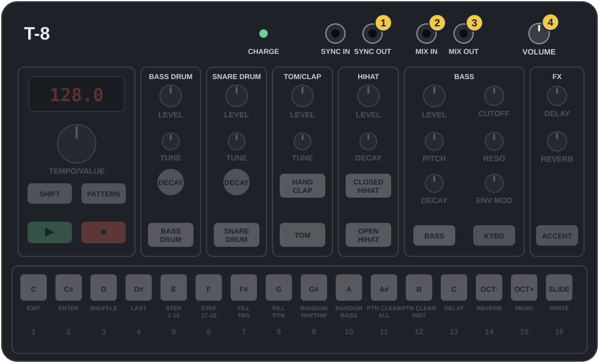
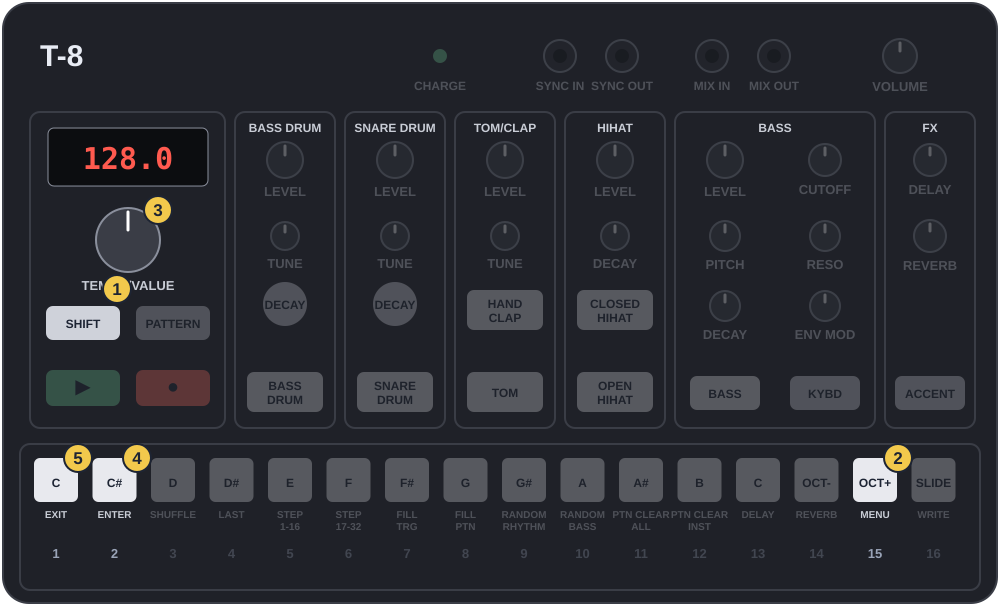

שני מכשירים, קצב אחד. הטי־8 מנגן את התופים ושולח את הקצב, והוולקה בס מנגנת את הבס. ארבע מנות קצרות: מחברים, בונים ביט אסיד טכנו, כותבים קו אסיד בוולקה, ומנגנים שני בסים יחד.
↩ חזרה לבסיס: בכרטיסים שמשנים משהו בג׳אם. נגיעה פותחת את הלחיצות שמחזירות לנקודת ההתחלה.
התצוגה מצוירת כמו על המכשיר: 8.8.18.38.2.
מנה 1
מחברים את שני המכשירים
💡 המהות: מנצח ונגן
שני מכשירים שמנגנים כל אחד בשעון שלו יתרחקו זה מזה אחרי כמה תיבות, גם אם בשניהם כתוב אותו קצב. לכן אחד הוא המנצח והשני הנגן. הטי־8 מנצח: הוא שולח בכבל קטן ״טיק״ קצר כמה פעמים בכל פעמה, והוולקה מתקדמת רק כשמגיע טיק. הכבל הזה מעביר רק קצב, לא צליל.
את הצליל של הוולקה מכניסים לטי־8 בכבל שני, ומשם הכל יוצא יחד לאוזניות. אין צורך במיקסר.

תרשים מצויר לפי המדריך הרשמי, לא צילום
SYNC OUT כבל הקצב, אל הוולקה
MIX IN כבל השמע, מהוולקה
MIX OUT אוזניות
VOLUME העוצמה של הכל
אפשר לגעת בתמונה כדי להגדיל.
1.1
שני כבלים
SYNC OUT · MIX IN
מתחילים כש:■ עצורשני המכשירים כבוייםהוולקה בעצירה
כבל הקצב, מונו: מ־טי־8SYNC OUT אל וולקהSYNC IN.בטי־8: השני משמאל בשורת השקעים הקטנים למעלה. בוולקה: מימין לשקע העגול הגדול יש שני שקעים קטנים, והשמאלי מביניהם הוא SYNC IN.
כבל השמע, סטריאו: מ־וולקהPHONES אל טי־8MIX IN.בטי־8: השלישי משמאל, מיד משמאל ל־MIX OUT.
אוזניות ב־טי־8MIX OUT, כמו תמיד.
הדלק את שניהם. ⟳סובב VOLUME של וולקה לשעה 12, ושל טי־8 לשעה 9.
הצלחת אם: כבל אחד יוצא מהטי־8 ונכנס לוולקה (קצב), והשני יוצא מהוולקה ונכנס לטי־8 (שמע). כל כבל בכיוון ההפוך מהשני.
לפי המדריך של הטי־8, כבל סטריאו לא עובד בשקעי SYNC. ובשקעי MIX צריך דווקא סטריאו.
להבין
לפי המדריך של הטי־8, MIX IN מכניס שמע ממכשיר אחר, והוא יוצא ב־MIX OUT יחד עם הטי־8. בטי־8 אין כפתור לעוצמה של מה שנכנס, ולכן את הוולקה מאזנים בכפתור VOLUME שלה.
שום דבר לא מחובר ל־SYNC IN של הטי־8, ולכן הוא מנגן לפי השעון שלו. הוא המנצח.

תרשים מצויר לפי המדריך הרשמי, לא צילום
SHIFT
15 MENU
TEMPO/VALUE
2 ENTER
1 EXIT
אפשר לגעת בתמונה כדי להגדיל.
1.2
כמה טיקים בכל פעמה
תפריט · cLk
מתחילים כש:■ עצורהטי־8 עצור
טי־8✋החזק SHIFT ו־👆לחץ לחצן 15 (MENU). 🖐שחרר.
⟳סובב TEMPO/VALUE עד 8.S8.C.8.S8.r, ועוד קליק אחד ימינה. בתצוגה מילה שנגמרת ב־cLk.
👆לחץ לחצן 2 (ENTER). ⟳סובב TEMPO/VALUE עד 8.8.8.8.2.
👆לחץ לחצן 1 (EXIT) פעמיים.
הצלחת אם: לפני היציאה התצוגה הראתה 2, ואחרי היציאה היא מראה את הקצב.
ספר לי מה כתוב בתצוגה בפריט הזה, ואת הערך שהיה בו לפני ששינית. במדריך האות הראשונה מודפסת בסימן שקשה לקרוא.
להבין
לפי המדריך, הפריט הזה קובע כמה טיקים הטי־8 שולח בכל פעמה: 1, 2, 3, 4, 6, 8, 12 או 24. הוולקות של קורג מצפות לשניים, טיק אחד כל שני צעדים. אם יוצאים ארבעה, הוולקה רצה כפול מהר.
1.3
להתחיל יחד
▶ · ▶
מתחילים כש:■ עצורבוולקה יש רצף כלשהו, למשל הקו משיעור 1 של הוולקות
וולקה👆לחץ ▶. היא נדלקת ומחכה.
טי־8👆לחץ ▶. שניהם יוצאים לדרך יחד.
טי־8⟳סובב TEMPO/VALUE עד 8.8.18.38.2. הקשב: הוולקה מאטה יחד איתו.
לעצירה: קודם טי־8👆לחץ ▶, ואחר כך וולקה👆לחץ ▶.
הצלחת אם: הבס של הוולקה נשמע באוזניות, והוא זז בדיוק עם התופים, גם כשמשנים קצב.
הוולקה התחילה לרוץ לפני שלחצת ▶ בטי־8? כנראה הטי־8 שולח טיקים גם כשהוא עצור. ספר לי, ואשנה את הסדר בכרטיס.
רץ כפול מהר או חצי לאט? חזור ל־1.2: הערך צריך להיות 2.
להבין
הטיקים לא אומרים לוולקה ״תתחילי״, רק ״צעד הבא״. לכן הוולקה צריכה להיות מוכנה עם ▶ לפני הטיק הראשון, ואז הצעד הראשון שלה נוחת על הקיק הראשון. מעכשיו כפתור TEMPO של הוולקה לא עושה כלום.
1.4
איזון
VOLUME · VOLUME
מתחילים כש:▶ מנגןשני המכשירים מנגנים
טי־8⟳סובב VOLUME עד שהקיק בעוצמה נוחה. הכפתור הזה הוא העוצמה של הכל באוזניות.
וולקה⟳סובב VOLUME עד שהבס יושב ממש מתחת לקיק: שומעים אותו ברור, אבל הקיק עדיין הבוס.
הצלחת אם: אפשר לשמוע כל מכה של הקיק, וגם כל תו של הבס.
הבס מעוות או רועש? הוולקה גבוהה מדי. הורד אותה, ואת העוצמה הכללית הרם בטי־8.
1.5
נגן עכשיו, ותרגול ידיים
5 דקות
דקות 1 ו־2: התחלה ועצירה, שוב ושוב. וולקה ואז טי־8. עצירה: טי־8 ואז וולקה. עד שהסדר בידיים.
דקות 3 ו־4: בזמן נגינה, טי־8⟳סובב TEMPO/VALUE לאט בין 126 ל־136. שני המכשירים זזים יחד.
דקה 5: השאר על 8.8.18.38.2, ונגן עם וולקה⟳סובב CUTOFF.
טכנו הוא דחיפה. קיק כבד וישר על כל פעמה, היי־האטים שרצים על כל צעד כמו מנוע, ובלי שאפל: הכל ישר ומכני, בכוונה. כדי שזה לא יהיה משעמם, חלק מההיי־האטים מנגנים רק לפעמים, וטום נמוך מתגלגל מתחת. בתבנית הזו של הטי־8 אין בס: הקו הראשי יגיע מהוולקה.
2.0
חזרה בדקה
ממנה 1
מי מחובר לאן בכבל הקצב?
SYNC OUT של הטי־8 אל SYNC IN של הוולקה.
איזה מכשיר מתחילים קודם?
הוולקה, ואז הטי־8. בעצירה הפוך.
2.1
תבנית ריקה, קצב 132
PATTERN · 13 · SHIFT + 11
מתחילים כש:■ עצוררק הטי־8. הוולקה בעצירה
טי־8👆לחץ PATTERN, ואז 👆לחץ לחצן 13. 👆לחץ BASS DRUM כדי לחזור לעריכה.
קו אסיד רץ כמעט על כל צעד, ו״מדבר״ בשלוש דרכים: קפיצות אוקטבה שנותנות לו קצב, גלישות שנשמעות כמו יללה, ושתיקות שנותנות לאוזן לנשום. לוולקה אין הדגשות, אז הדיבור כולו בא משלושת אלה, ומהידיים על CUTOFF ו־PEAK.
3.0
חזרה בדקה
ממנה 2
למה אין שאפל בביט הזה?
טכנו ישר ומכני בכוונה. השאפל מנדנד, וזה כבר סגנון אחר.
איך מכה מנגנת רק לפעמים?
מחזיקים את הצעד ומסובבים TEMPO/VALUE לסיכוי, למשל P.60.
3.1
הצליל: מסור אחד
FUNC + 1 · FUNC + 8
מתחילים כש:■ עצורהוולקה עצורהSTEP MODE כבוי
וולקה👆לחץ VCO1. ✋החזק FUNC וגע בקליד 1. 🖐שחרר.
✋החזק FUNC, ובלי לשחרר הסתכל: רק VCO1 מואר. נורה 8 כבויה (מסור), 11 כבויה, 12 דולקת. משהו לא כמו שצריך? גע בו. 🖐שחרר.
⟳סובב PITCH 1 לשעה 12.
הצלחת אם: נגיעה בקליד 1 משמיעה צליל בס אחד, זמזומי וחד.
להבין
מתנד אחד בגל מסור, כמו ב־303 המקורי. המסור מלא הרמוניות, ולכן המסנן יכול לעשות ממנו צרחה. זו בדיקת הנורות משיעור 1 של הוולקות, 3.0.
הצלחת אם: אחרי ▶ (קודם בוולקה ואז בטי־8) הקו רץ על הביט, קופץ למעלה ונופל, עם שלוש ״יללות״ בכל תיבה.
טעית בנגיעה? 👆לחץ FUNC ליציאה, וחזור לשלב הראשון. כפתור ״להתחיל מחדש״ מנקה את הסימונים כאן.
להבין
הגלישות יוצאות מהצעד שלפני הקפיצה: מצעד 2 אל הלה הגבוה בצעד 3, מ־9 אל 10, ומהמי בצעד 14 אל הלה הגבוה ב־15. השתיקות בצעדים 5 ו־12 שוברות את הריצה, ובגללן הקו נשמע כמו משפט ולא כמו רצף.
יש לך עכשיו שני סינתי אסיד. אם שניהם ינגנו באותו גובה, הם יהפכו לבוץ. לכן מחלקים: הוולקה למטה, רצה כל הזמן. הטי־8 למעלה, ארבעה תווים קצרים בלבד, בדיוק ברווחים בין הקיקים, ושניים מהם עם הדגשה, הדבר שאין לוולקה. ככה זה נשמע כמו שיחה: אחד מניע, השני צועק מעליו. בטרנס ובאסיד טכנו זה טריק קבוע.